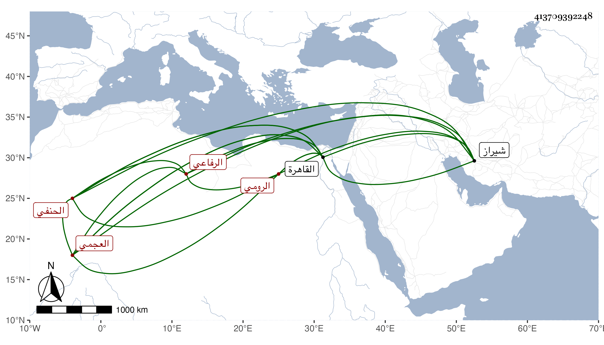

0902Sakhawi.DawLamic.ITO20230111-ara1.EIS1600.413709392248
Biography ID: 413709392248
649
حيدر بن أحمد بن إبراهيم أبو الحسن الرومي الأصل العجمي الحنفي الرفاعي نزيل القاهرة ويعرف بشيخ التاج والسبع وجوه . ولد بشيراز في حدود الثمانين وسبعمائة ، وتسلك بأبيه وغيره ورحل إلى البلاد ووفد على ملوك الشمس وعلمائه ، فكان ممن اجتمع به التفتازاني والسيد الجرجاني والصدر تركا وقدم القاهرة سنة أربع وعشرين بأخويه إبراهيم الشاب الظريف والموله جبران وأمهم فأكرمه الأشرف وأنزله المنظرة المشار إليها وأنعم عليه برزقه عشرين فدانا بأراضي ناحيتها واستمر بها إلى أن أخرجه الظاهر جقمق حين ذكر له عنه محمد بن اينال قبائح بل وأمر بهدمه ورسم للمرافع المشار إليه بانقاضه مع وجود ابنه المؤيد بالله وصار بلاقع ، وندم الظاهر على انجراره مع المشار إليه وطلب صاحب الترجمة وأخذ بخاطره ووعده بالجميل وأنعم عليه بأشياء ورتب له من الذخيرة وغيرها ما يقوم بأوده ، وصار يتردد إلى السلطان ويقعد بمجلسه وسكنه بالقرب من زاوية الرفاعية مدة إلى أن أنعم عليه بمشيخة زاوية قبة النصر بعد صرف محمود الاصبهاني منها وسكنها إلى أن مرض وطال مرضه ، ثم مات في ليلة الاثنين حادي عشري ربيع الأول سنة أربع وخمسين عن نحو السبعين ، ودفن بباب الوزير على أخيه إبراهيم بعد أن صلى عليه بقبة النصر وكان شكلا حسنا منور الشيبة إلى الطول أقرب ضخما حلو اللفظ والمحاضرة حافظا لكثير من الشعر فصيحا باللغتين التركية والعجمية بل له فيهما النظم الجيد ، انتهت إليه الرياسة في فني الموسيقى والألحان وصنف فيهما مع الديانة وكثرة العبادة والعفة سيما عما ترمي الأعاجم به محبا في الصحابة متبعا للسنة سليم الباطن إلى الغاية قل أن يكون في أبناء جنسه مثله ولرقصه في السماع خفر ولأخيه إبراهيم الرياسة فيه ولم نر بعدهما من يدانيهما في الموسيقى والرقص وعمل الأوقات وجمع الفقراء ومعرفة آدابهم فإنه كان لهذا نيف على خمسين سنة يجلس على سجادة المشيخة بعد إذن الأكابر له في ذلك كما شوهد بخطوطهم . أفاده يوسف بن تغري بردى ، وبالغ في اطرائه عفا الله عنه .
